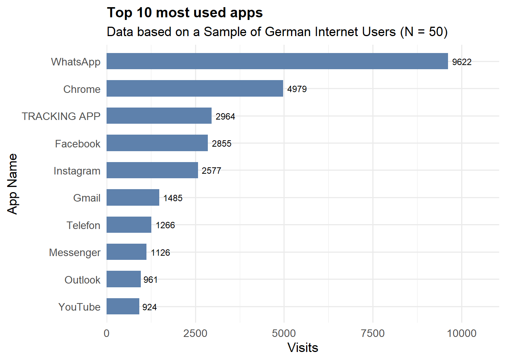
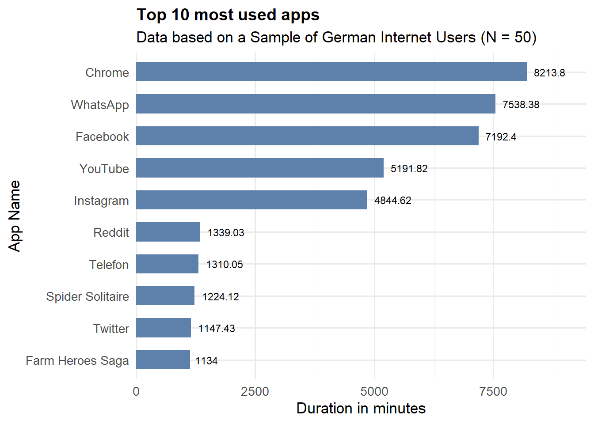
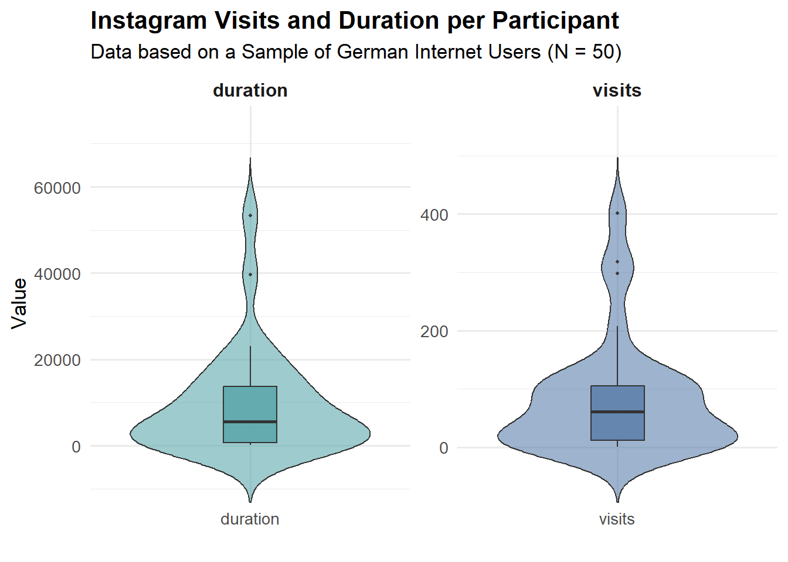
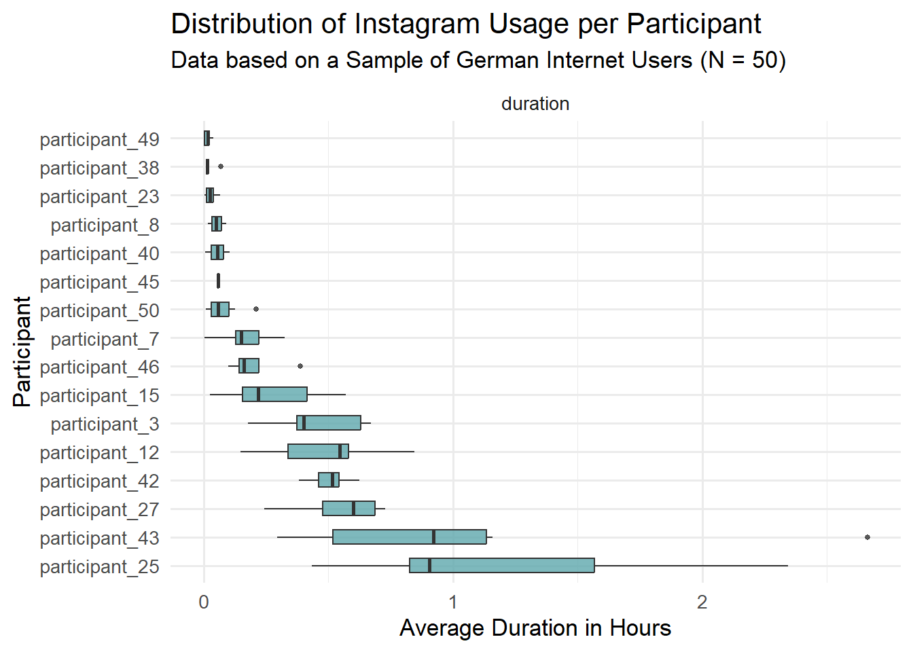
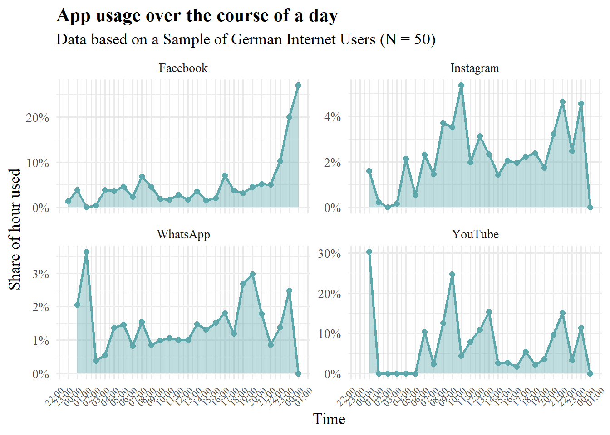
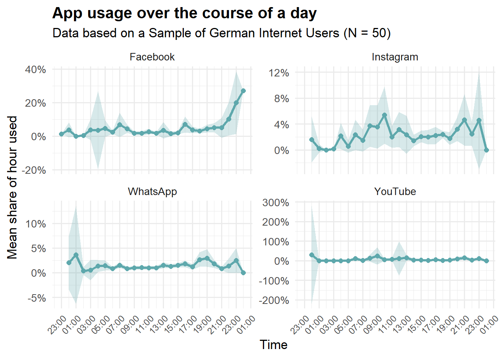
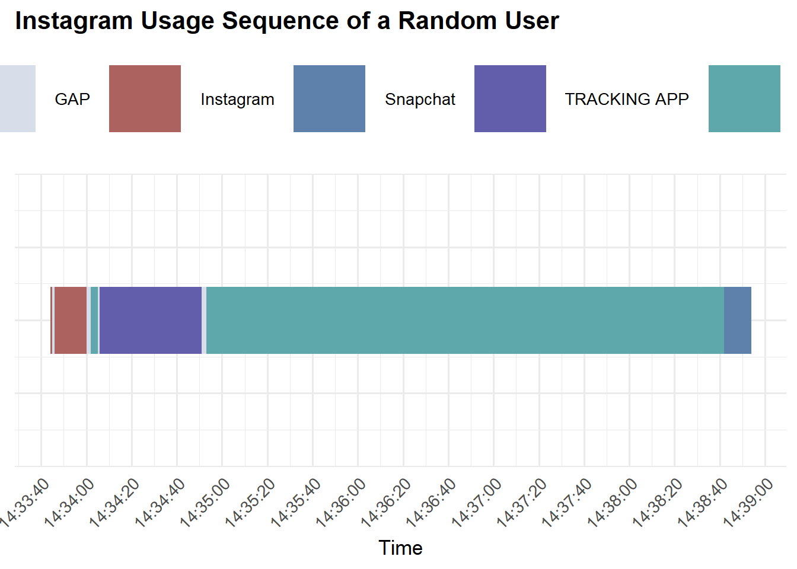
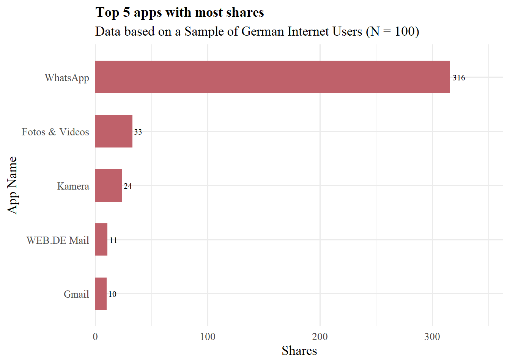
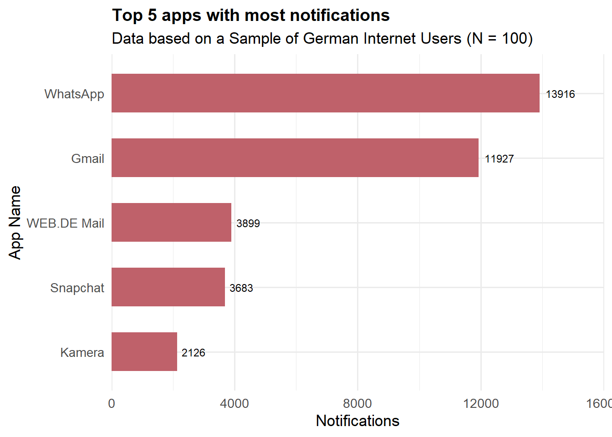

![]()
install.packages("dplyr")
install.packages("lubridate")
install.packages("purrr")
install.packages("tidyr")
install.packages("kableExtra")
install.packages("ggplot2")
install.packages("extrafont")
install.packages("forcats")
install.packages("stringr")How to work with Android App Logging Data
1 Learning Objectives
This guide aims to provide learners with the conceptual understanding and practical skills needed to import, clean, transform, and analyse Android log data using R and the tidyverse ecosystem. By the end of the module, learners should be able to transform raw device logs into meaningful analytical datasets suitable for behavioural, usability, or digital phenotyping studies.
This includes:
- Understanding the Structure of Android Log Data (e.g. Identify key variables typically found in Android logs)
- Data Import and preprocessing with tidyverse
- Operationalising exposure and media usage (e.g. session duration, app usage, …)
2 Target audience
This guide is designed for researchers, data analysts, and students who are interested in working with mobile sensing or digital trace data, particularly Android log files. It assumes a basic familiarity with R and the tidyverse ecosystem, including data manipulation with dplyr and data visualization with ggplot2. Participants should already understand fundamental data analysis concepts and be ready to apply them to the challenges of preprocessing and analysing complex, time-based log data.
3 Setting up the computational environment
Install the R packages.
And load the R packages.
require(dplyr)
require(lubridate)
require(purrr)
require(tidyr)
require(kableExtra)
require(ggplot2)
library(extrafont)
library(forcats)
library(stringr)# Options
options(scipen = 999)4 Duration
Around half a day.
6 Some Context about Android App Log Data
Android app log data are automatically generated records that capture interactions between users, apps, and the operating system on Android devices. These logs originate from system services and applications that record events such as app launches, screen on/off states, foreground and background transitions, notifications, and sensor activities. They often include time-stamped information identifying the event type, the app or process involved (via package names), and contextual metadata such as battery status, network connectivity, or user interactions.
7 The red or blue pill?
Since the degree of preprocessing and thus the structure of app logging data can vary, we will look at two example cases. The first case is based on a data set that has already been preprocessed to a relatively high degree by a panel provider, thus providing a good introduction to some basic concepts in data analysis.
We call this data set “blue” in a somewhat fitting reference to the blue pill in The Matrix.
8 The blue data set
Before any analysis can begin, it’s crucial to understand how the data is organized. A typical more processed Android logging dataset includes the following variables:
panelist_id – unique identifier for each user or device
date – the date of the recorded event
start_time - a timestamp indicating the start of an application
end_time - a timestamp indicating the end of an application
duration - the usage duration (in seconds or milliseconds) of the application
app_name – readable name of the application
app_package – the app’s identifier
Note: The variable names as well as the structure of your data set can vary based on the level of preprocessing and tracking app used.
8.1 Common Dimensions of Analysis
We will use the blue dataset to familiarize you with some conceptual decisions. However, in the course of the tutorial, we will use the red dataset more to demonstrate the computational steps of data preparation. Nevertheless, these forthcoming conceptual decisions are also relevant for the red dataset.
To make sense of app log data, analysts typically view it through several dimensions of analysis:
Person-level – patterns and metrics aggregated per individual or group.
Temporal – analyses over time (hourly, daily, weekly trends).
App-level – comparisons across apps (WhatsApp vs. Telegram) or app categories (Entertainment vs. Shopping).
Combined perspectives – mixing dimensions, such as app use over time or per user.
These general dimensions of comparison run through the entire analysis. Accordingly, it is important to consider at the beginning of the analysis what the results should show and on which of the dimensions of comparison they are based.
However, before we go through some examples of analyses, our data must undergo several preprocessing steps, even though it is already very well processed.
8.2 Preprocessing the Blue Data Set
Raw log data often contains a large amount of noise from background processes and system apps that do not represent active user behavior. In this step, we focus on data cleaning and filtering (Zerrer, 2024), including:
Removing background apps – exclude system processes or apps running without direct user engagement.
Merge consecutive visits to the same app - sometimes apps are interrupted by system apps, which leads to a technical artifact that appears as a new app visit. To prevent these from being misinterpreted as human behavior (e.g., as intentional app access), these cases are removed.
Blacklisting apps – recode apps that are irrelevant to the research question and are potential sensitive (e.g., health apps, banking, etc.). I have prepared a preliminary list of blacklisted apps for this tutorial. You can find the script for this on GitHub (blacklisted_apps.qmd).
background_apps = read.csv("data/background_system_packages.csv") # based on Parry & Toth (2025) with some smaller extensions
blacklisted_apps = readRDS("data/blacklisted_apps.rds") %>% select(-app_package) %>% distinct(app_name, .keep_all = TRUE)Let’s import our dataset.
blue_data = readRDS("data/blue_data.rds") And have a quick look.
glimpse(blue_data)Rows: 121,959
Columns: 7
$ panelist_id <chr> "participant_33", "participant_33", "participant_33", "par…
$ date <date> 2021-03-04, 2021-03-04, 2021-03-04, 2021-03-04, 2021-03-0…
$ app_package <chr> "com.android.chrome", "com.teslacoilsw.launcher", "com.goo…
$ app_name <chr> "Chrome", "Nova Launcher", "Google", "Google", "Nova Launc…
$ start_time <chr> "2021-03-04 00:02:31", "2021-03-04 00:03:09", "2021-03-04 …
$ end_time <chr> "2021-03-04 00:03:08", "2021-03-04 00:03:10", "2021-03-04 …
$ duration <int> 37, 1, 126, 13, 1, 23, 192, 2, 3, 122, 4, 8, 135, 9, 4, 2,…blue_data_clean = blue_data %>%
# let's make sure that there are no background apps in our data set
filter(!app_package %in% background_apps$pcn) %>%
# convert start_time and end_time to proper datetime format, make sure to choose the correct timezone (tz)
mutate(
start_time = as.POSIXct(start_time, format = "%Y-%m-%d %H:%M:%S", tz = "Europe/Berlin"),
end_time = as.POSIXct(end_time, format = "%Y-%m-%d %H:%M:%S", tz = "Europe/Berlin")
) %>%
# we need to sort our rows in the correct temporal order
# make sure that you group by participant to avoid sorting across all participants
group_by(panelist_id) %>%
# make sure that you take the grouping into account, when you sort your data
arrange(desc(start_time), .by_group = TRUE) %>%
# it is important that you use lag() or lead() based on your sorting (descending or ascending)
mutate(
# we use the 'next_panelist_id' variable to ensure that participants are not mixed up by accident.
next_panelist_id = lag(panelist_id, n = 1L),
# we use the 'next_app_name' to identify potential consecutive app visits
next_app_name = lag(app_name, n = 1L),
# we need the 'next_start_time' to calculate the time_gap between events
next_start_time = lag(start_time, n = 1L),
# we calculate the time_gap in seconds
time_gap = as.numeric(next_start_time - end_time, units = "secs"),
# we use 'previous_start_time' to replace 'start_time' with the new correct timestamp if we merge consecutive app visits
previous_start_time = lead(start_time, n = 1L)
) %>%
mutate(
# we use a filter variable to identify consecutive app visits, which we can remove later
# conditions are:
# - panelist_id and next_panelist_id are identical
# - app_name and next_app_name are identical
# - time_gap equals 0
filter_var = if_else((panelist_id == next_panelist_id & app_name == next_app_name & time_gap == 0), "remove", "keep"),
# I like to keep an column indicating that I changed something, therefore I create 'rows_merged'
rows_merged = if_else((lead(filter_var)) == "remove", "Yes", "No"),
# replace 'start_time' with 'previous_start_time' for relevant rows
start_time = if_else(filter_var == "keep" & rows_merged == "Yes", as_datetime(previous_start_time), as_datetime(start_time)),
# replace 'duration' with the updated duration for relevant rows
duration = if_else(filter_var == "keep" & rows_merged == "Yes", as.numeric(end_time - start_time, units = "secs"), duration)
) %>%
# remove consecutive visits
filter(filter_var == "keep") %>%
# I suggest replacing sensitive apps in your dataset to strengthen anonymisation
# replace 'app_names' based on our blacklisted apps
left_join(blacklisted_apps, by = "app_name") %>%
mutate(
app_name = if_else(!is.na(blacklisted_app), blacklisted_app, app_name),
app_package = if_else(!is.na(blacklisted_app), "blacklsited_package", app_package)
) %>%
select(-blacklisted_app) %>%
ungroup() Okay, we are done with our preprocessing of the blue data set. Let’s have a quick look.
glimpse(blue_data_clean)Rows: 56,967
Columns: 14
$ panelist_id <chr> "participant_1", "participant_1", "participant_1",…
$ date <date> 2021-03-11, 2021-03-11, 2021-03-11, 2021-03-11, 2…
$ app_package <chr> "com.twitter.android", "com.twitter.android", "com…
$ app_name <chr> "Twitter", "Twitter", "Samsung Internet", "Samsung…
$ start_time <dttm> 2021-03-11 23:34:14, 2021-03-11 23:34:14, 2021-03…
$ end_time <dttm> 2021-03-11 23:35:26, 2021-03-11 23:34:47, 2021-03…
$ duration <dbl> 72, 33, 3, 3, 10, 10, 92, 92, 45, 73, 28, 274, 274…
$ next_panelist_id <chr> "participant_1", "participant_1", "participant_1",…
$ next_app_name <chr> "Twitter", "Twitter", "Twitter", "Samsung Internet…
$ next_start_time <dttm> 2021-03-11 23:34:47, 2021-03-11 23:34:14, 2021-03…
$ time_gap <dbl> -39, -33, 1, -3, 1, -10, 2, -91, 2, -45, -28, 0, -…
$ previous_start_time <dttm> 2021-03-11 23:34:14, 2021-03-11 23:34:10, 2021-03…
$ filter_var <chr> "keep", "keep", "keep", "keep", "keep", "keep", "k…
$ rows_merged <chr> "Yes", "No", "No", "No", "No", "No", "No", "No", "…Alright, we are ready for some analysis.
8.3 Calculating Visits
A visit represents a unit of exposure, such as a discrete instance of app use. Establishing a robust visit definition ensures consistent measurement of usage frequency across data sets and users.
Let’s stick to the dimensions we’re using for comparison. We are interested in the top 10 most-visited apps in our sample (dimension = app level).
most_visited_apps = blue_data_clean %>%
# group by application
group_by(app_name) %>%
# summarise the total number of visits for each application
summarise(
visit = n()
) %>%
# sort in descending order
arrange(desc(visit)) %>%
# select the top 10 rows
head(n = 10)
most_visited_apps# A tibble: 10 × 2
app_name visit
<chr> <int>
1 WhatsApp 9622
2 Chrome 4979
3 TRACKING APP 2964
4 Facebook 2855
5 Instagram 2577
6 Gmail 1485
7 Telefon 1266
8 Messenger 1126
9 Outlook 961
10 YouTube 924A table is nice but a plot is better. Let’s visualize our findings using ggplot.
# We need the number of participants later
blue_n_participants = blue_data_clean %>%
summarise(
n_panelist = n_distinct(panelist_id)
) %>%
pull(n_panelist)
plot1 = ggplot(most_visited_apps, aes(x = reorder(app_name, visit), y = visit)) +
geom_col(width = 0.6, fill = "#5E81AC") +
coord_flip() +
geom_text(aes(label = visit), hjust = -0.2, size = 3, family = "Times New Roman") +
scale_y_continuous(expand = expansion(mult = c(0, 0.15))) +
theme_minimal(base_size = 13, base_family = "Times New Roman") +
theme(
legend.position = "none",
plot.title = element_text(face = "bold", size = 14, family = "Times New Roman"),
axis.text.y = element_text(family = "Times New Roman"),
axis.text.x = element_text(family = "Times New Roman")
) +
labs(
title = "Top 10 most used apps",
subtitle = paste0("Data based on a Sample of German Internet Users (N = ", blue_n_participants, ")"),
x = "App Name",
y = "Visits"
)
plot1
8.4 Calculating Duration
Duration reflects how long a user is exposed to an app or activity. It is another vital form of exposure that complements visit counts.
Therefore we need to derive start_time, stop_time and the duration for each event, which is already done in our nice blue data set.
This enables us calculate the duration per app and aggregate it over time. This can include overall smartphone duration, app-specific duration (e.g., Instagram), and temporal patterns of duration. Duration metrics reveal not only how often apps are used, but how much attention they receive.
most_used_apps = blue_data_clean %>%
# group by application
group_by(app_name) %>%
# summarise the total number of visits for each application
summarise(
duration = round(sum(duration, na.rm = TRUE) / 60, digits = 2) # we divide by 60 to get minutes and round the result
) %>%
# sort in descending order
arrange(desc(duration)) %>%
# select the top 10 rows
head(n = 10)
most_used_apps# A tibble: 10 × 2
app_name duration
<chr> <dbl>
1 Chrome 8214.
2 WhatsApp 7538.
3 Facebook 7192.
4 YouTube 5192.
5 Instagram 4845.
6 Reddit 1339.
7 Telefon 1310.
8 Spider Solitaire 1224.
9 Twitter 1147.
10 Farm Heroes Saga 1134 Let’s plot this again.
plot2 = ggplot(most_used_apps, aes(x = reorder(app_name, duration), y = duration)) +
geom_col(width = 0.6, fill = "#5E81AC") +
coord_flip() +
geom_text(aes(label = duration), hjust = -0.2, size = 3, family = "Times New Roman") +
scale_y_continuous(expand = expansion(mult = c(0, 0.15))) +
theme_minimal(base_size = 13, base_family = "Times New Roman") +
theme(
legend.position = "none",
plot.title = element_text(face = "bold", size = 14, family = "Times New Roman"),
axis.text.y = element_text(family = "Times New Roman"),
axis.text.x = element_text(family = "Times New Roman")
) +
labs(
title = "Top 10 most used apps",
subtitle = paste0("Data based on a Sample of German Internet Users (N = ", blue_n_participants, ")"),
x = "App Name",
y = "Duration in minutes"
)
plot2
8.5 Mobile Behavior between participants
In my opinion, the phenomenon of extremely skewed distribution is important for understanding the structure of digital behavioral data in general and app usage data in particular. The use of apps or smartphones varies greatly between the individuals observed and between time units. This becomes particularly important when location parameters or other statistical measures or calculations are performed.
Let’s take a quick look at this using Instagram usage as an example.
instagram_participants = blue_data_clean %>%
# filter for Instagram usage
filter(app_name == "Instagram") %>%
# group by participants
group_by(panelist_id) %>%
summarise(
# calculate vistis to Instagram
visits = n(),
# and usage time
duration = sum(duration, na.rm = TRUE)
) %>%
pivot_longer(
cols = c(visits, duration),
names_to = "metric",
values_to = "value"
) plot3 = ggplot(instagram_participants, aes(x = metric, y = value, fill = metric)) +
geom_violin(trim = FALSE, alpha = 0.6) +
geom_boxplot(width = 0.2, outlier.size = 0.8, alpha = 0.9) +
scale_y_continuous(expand = expansion(mult = c(0, 0.15))) +
scale_fill_manual(
values = c("visits" = "#5E81AC", "duration" = "#5EA8AC"),
labels = c("Visits", "Duration (minutes)")
) +
facet_wrap(~ metric, scales = "free") +
theme_minimal(base_size = 13, base_family = "Times New Roman") +
theme(
legend.position = "none",
strip.text = element_text(face = "bold", size = 12),
plot.title = element_text(face = "bold")
) +
labs(
title = "Instagram Visits and Duration per Participant",
subtitle = paste0("Data based on a Sample of German Internet Users (N = ", blue_n_participants, ")"),
x = "",
y = "Value"
)
plot3
Okay, let’s try to get a better idea of what’s going on in our dataset. We will examine the data at an individual level and see how Instagram usage behaviour varies between our participants across days. As I am a very visual person, I prefer plots to tables.
random_sample_25 = blue_data_clean %>%
select(panelist_id) %>%
distinct() %>%
slice_sample(n = 25) %>%
pull(panelist_id)
instagram_participants_days = blue_data_clean %>%
# filter for Instagram usage
filter(app_name == "Instagram") %>%
filter(panelist_id %in% random_sample_25) %>%
# group by participants and date
group_by(panelist_id, date) %>%
summarise(
# calculate usage time to Instagram
duration = sum(duration, na.rm = TRUE) / 60 /60 # in hours
) %>%
pivot_longer(
cols = c(duration),
names_to = "metric",
values_to = "value"
)
# Boxplot-Plot
plot3 = ggplot(instagram_participants_days,
aes(x = fct_reorder(panelist_id, value, .fun = mean, .desc = TRUE),
y = value,
fill = metric)) +
geom_boxplot(width = 0.5, outlier.size = 1, alpha = 0.8) +
facet_wrap(~ metric, scales = "free_y") +
scale_fill_manual(values = c("duration" = "#5EA8AC")) +
coord_flip() +
theme_minimal(base_size = 13, base_family = "Times New Roman") +
theme(
legend.position = "none",
legend.title = element_blank()
) +
labs(
title = "Distribution of Instagram Usage per Participant",
subtitle = paste0("Data based on a Sample of German Internet Users (N = ", blue_n_participants, ")"),
x = "Participant",
y = "Average Duration in Hours"
)
plot3
The large variance in the data is clearly evident here. The same applies to the occurrence of extreme values. This skewed distribution is also reflected in the widely differing values for the median and the mean. Against this background, the distribution of the app tracking data should be taken into account when selecting the parameters to be calculated (mean, median, etc.).
8.6 Mobile Behavior over time
One of the biggest advantages of mobile tracking data is the high temporal granularity of our data. Every event, such as opening an app, is assigned a very precise timestamp (usually even in milliseconds). This allows us to view recorded user behavior over different time periods.
Our blue test data set covers a total of one week. Let’s take a look at Instagram usage during that week.
week = blue_data_clean %>%
# filter for Instagram and Facebook
filter(app_name %in% c("Instagram", "YouTube", "WhatsApp", "Facebook")) %>%
# group by panelist_id, date and app
group_by(panelist_id, date, app_name) %>%
# calculate visits and time spent in Instagram per participant and day
summarise(
visits = n(),
duration = sum(duration, na.rm = TRUE) / 60, # in minutes
.drop = "groups"
) %>%
# calculate average visits and duration per day across the sample
group_by(date, app_name) %>%
summarise(
visits = mean(visits, na.rm = TRUE),
duration = mean(duration, na.rm = TRUE)
) %>%
pivot_longer(cols = c(visits, duration),
names_to = "metric",
values_to = "value") %>%
mutate(
metric = factor(metric, levels = c("visits", "duration"))
)
plot4 = ggplot(week, aes(x = date, y = value, color = metric)) +
geom_line(linewidth = 1) +
geom_point(size = 2) +
scale_color_manual(
values = c("visits" = "#5E81AC", "duration" = "#5EA8AC"),
labels = c("Visits", "Duration (minutes)")
) +
scale_x_date(date_breaks = "1 day",
date_labels = "%d.%m") +
facet_wrap(~ app_name, ncol = 2, scales = "free_y") +
theme_minimal(base_size = 13, base_family = "Times New Roman") +
theme(
legend.title = element_blank(),
legend.position = "top",
plot.title = element_text(face = "bold"),
axis.text.x = element_text(angle = 45, hjust = 1),
strip.text = element_text(face = "bold")
) +
labs(
title = "Average Daily App Usage per Participant over a Week",
subtitle = paste0("Data based on a Sample of German Internet Users (N = ", blue_n_participants, ")"),
x = "Date",
y = "Value"
)
plot4
Okay, that gives us a pretty good overview of Instagram usage over the course of the week. Now, of course, we can also select other time periods and take a closer look at them. Let’s take a look at Instagram usage over the course of a day.
# Let's select a random day in our sample
random_day = blue_data_clean %>%
select(date) %>%
distinct() %>%
slice_sample(n = 1) %>%
pull(date)
# Okay, we select relevant apps and date
day_data = blue_data_clean %>%
filter(app_name %in% c("Instagram", "YouTube", "WhatsApp", "Facebook"),
date == random_day) %>%
# we make sure that we have the proper timeformat
mutate(
start_time = as.POSIXct(start_time, tz = "Europe/Berlin"),
end_time = as.POSIXct(end_time, tz = "Europe/Berlin"),
start_hour = floor_date(start_time, "hour"),
end_hour = ceiling_date(end_time, "hour") - seconds(1)
)
# We need to calculate hourly data
hourly_data = day_data %>%
rowwise() %>%
# create every hour between start and end hour
mutate(
hour = list(seq(start_hour, end_hour, by = "hour"))
) %>%
unnest(hour) %>%
ungroup() %>%
# share of hour used
mutate(
hour_end = hour + hours(1),
hour_share = as.numeric(pmin(end_time, hour_end) - pmax(start_time, hour), units = "mins") / 60
) %>%
# group by hour and app
group_by(hour, app_name) %>%
# calculate mean, SD, and CIs
summarise(
mean_hour_share = mean(hour_share, na.rm = TRUE),
# SD
sd_hour_share = sd(hour_share, na.rm = TRUE),
# sample size (n)
n = n(),
critical_t = qt(0.975, df = n - 1),
se_hour_share = sd_hour_share / sqrt(n),
upper_ci = mean_hour_share + critical_t * se_hour_share,
lower_ci = mean_hour_share - critical_t * se_hour_share,
.groups = "drop"
) %>%
# Cleaning CIs (if n = 1 --> NA)
mutate(
across(c(upper_ci, lower_ci), ~ifelse(n <= 1, mean_hour_share, .x))
) %>%
# complete missing cases
complete(
hour = seq.POSIXt(as.POSIXct(random_day, tz = "Europe/Berlin"),
as.POSIXct(random_day, tz = "Europe/Berlin") + hours(23),
by = "hour"),
app_name,
# fill with 0
fill = list(mean_hour_share = 0, sd_hour_share = NA, n = 0, se_hour_share = NA, critical_t = NA, lower_ci = 0, upper_ci = 0)
)
plot5 = ggplot(hourly_data, aes(x = hour, y = mean_hour_share)) +
geom_ribbon(
aes(ymin = lower_ci, ymax = upper_ci),
fill = "#5EA8AC",
alpha = 0.25
) +
geom_line(color = "#5EA8AC", linewidth = 1.2) +
geom_point(color = "#5EA8AC", size = 2) +
scale_y_continuous(labels = scales::percent_format(accuracy = 1)) +
scale_x_datetime(date_breaks = "2 hour",
date_labels = "%H:%M") +
facet_wrap(~ app_name, ncol = 2, scales = "free_y") +
theme_minimal(base_size = 13, base_family = "Times New Roman") +
theme(
legend.position = "none",
plot.title = element_text(face = "bold"),
axis.text.x = element_text(size = 9, angle = 45, hjust = 1)
) +
labs(
title = "App usage over the course of a day",
subtitle = paste0("Data based on a Sample of German Internet Users (N = ", blue_n_participants, ")"),
x = "Time",
y = "Mean share of hour used"
)
plot5
That looks good. However, we can go into even greater detail. Let’s say we are interested in usage behavior in the mobile situation in which Instagram is used. Specifically, how long does the person use their smartphone and which apps are used before and after? To do this, we first need to consider a few conceptual issues.
User behavior unfolds as sequences of events—actions that occur in a specific order over time.
In this section, we introduce three key concepts:
Event – a single recorded action (e.g., app foregrounding).
Sequence – a meaningful order of multiple events (e.g., unlocking phone → opening Instagram → switching to Messages).
Session – as defined by Peng & Zhu, a sequence of events with a defined duration that represents a coherent unit of mobile behavior (Peng & Zhu, 2020).
By identifying and analyzing sessions, we can capture the flow and structure of smartphone interaction, moving beyond isolated events to behavioral patterns.
sessions = blue_data_clean %>%
# first, we need to identify sesssions
# new sessions starts, if
# - gap > 60 seconds or
# - panelist_id does not equal next_panelist
mutate(
new_session = if_else(
row_number() == 1 | time_gap > 60 | panelist_id != next_panelist_id,
1, 0
),
session_id = paste0(panelist_id, "_", cumsum(new_session))
)
# we create a df which contains all session_ids and the number of instagram visits
instagram_visits = sessions %>%
group_by(session_id) %>%
summarise(
# calculate total visits per session
total_visits = n(),
# calculate Instagram visits per session
instagram_visits = sum(app_name == "Instagram")
) %>%
# just keep sessions with at least one instagram visit
filter(instagram_visits > 0)
# let's filter our sessions based on 'instagram_visits' to get the whole usage sequence
instagram_sessions = sessions %>%
filter(session_id %in% instagram_visits$session_id)
# okay, let's say we want to visualize one specific instagram session, to get a better idea about the context etc.
# select a random session
random_session = instagram_sessions %>%
# We want something which is nice to visualize. Therefore we limit our sample for the random draw to sessions which have a certain duration
group_by(session_id) %>%
summarise(
session_duration = sum(duration, na.rm = TRUE)
) %>%
filter(session_duration > 180 & session_duration < 360) %>%
ungroup() %>%
slice_sample(n = 1) %>%
pull(session_id)
instagram_visual = instagram_sessions %>%
filter(session_id == random_session) %>%
select(app_name, start_time, end_time, duration, session_id)
# I want to fill the temporal gaps between apps, therefore I need to calculate the gaps in between
gaps = instagram_visual %>%
mutate(
next_start = lag(start_time),
gap_start = end_time,
gap_end = next_start
) %>%
filter(!is.na(next_start) & gap_end > gap_start) %>%
mutate(
app_name = "GAP"
) %>%
select(app_name, gap_start, gap_end, session_id) %>%
rename(
start_time = gap_start,
end_time = gap_end
)
# add the gap data to 'instagram_visual'
instagram_visual = instagram_visual %>%
bind_rows(gaps) %>%
mutate(
app_name = as.character(app_name)
) %>%
mutate(bar_y = 1)
# get dynamic colors for each app, except for GAP which should be grey
app_levels = unique(instagram_visual$app_name)
apps_without_gap = setdiff(app_levels, "GAP")
gap_color = c("GAP" = "#D8DEE9")
colors = c("#5E81AC", "#5EA8AC", "#625EAC", "#AC625E","#A8AC5E")
app_colors = setNames(
rep(colors, length.out = length(apps_without_gap)), apps_without_gap
)
color_map = c(gap_color, app_colors)
plot6 = ggplot(instagram_visual) +
geom_segment(
aes(
y = bar_y,
yend = bar_y,
x = start_time,
xend = end_time,
color = app_name
),
size = 20
) +
scale_color_manual(values = color_map) +
scale_x_datetime(date_breaks = "20 secs",
date_labels = "%H:%M:%S") +
labs(
x = "Time",
y = NULL,
title = "Instagram Usage Sequence of a Random User",
) +
theme_minimal(base_size = 13, base_family = "Times New Roman") +
theme(
legend.title = element_blank(),
legend.position = "top",
plot.title = element_text(face = "bold"),
axis.text.x = element_text(angle = 45, hjust = 1),
axis.text.y = element_blank(),
axis.title.y = element_blank(),
axis.ticks.y = element_blank()
)
plot6
Here we see the sequence of visited apps within the randomly selected session.
We have now learned about some basic concepts and analyses of app tracking data using a relatively well-prepared data set.
If you have such a data set, you can close your laptop at this point and be happy. If you want to continue, I would suggest taking a break now and then we’ll look at the red data set.
9 The red data set
We have already learned about some concepts for analyzing app logging data and applied them to a relatively well-prepared “blue” data set.
However, not all app logging data sets look like this. Accordingly, I invite you to take the red pill and take a deeper look into the more or less messy reality.
First, let’s take a look at our data structure.
panelist_id – unique identifier for each user or device
date – the date of the recorded event
seen_timestamp – precise time of the event (in our case milliseconds)
event_type – type of user interaction (e.g., “foreground,” “background,” “notification”)
app_name – readable name of the application
full_package_name – complete identifier used by the Android system (e.g., com.instagram.android)
package_name – shortened version of the app’s identifier
Understanding this schema helps ensure that all subsequent preprocessing and analysis steps are properly aligned with the data’s meaning.
Let’s take a closer look at the event_types. Here, we can refer to the article by Parry & Toth (Parry & Toth, 2025), the official Android Developers Documentation or Android Code Search (search for “UsageEvents”), which breaks down the meaning of each type.
| Event Type | Name | Explanation |
|---|---|---|
| 0 | NONE | A device level event like DEVICE_SHUTDOWN does not have package name, but some user code always expect a non-null for every event. |
| 1 | Activity resumed | An activity (associated with a package and class) moved to the foreground. This constant was deprecated in API level 29. |
| 2 | Activity paused | An activity moved to the background. |
| 3 | End of day | This is a technical note from the system at the end of the day. It indicates that the app was actively open on the screen at that time (usually midnight). The system automatically ended the recording for the day here to start a new statistics period. |
| 4 | Continue previous day | An event type denoting that a component was in the foreground the previous day. This is effectively treated as a ACTIVITY_RESUMED. |
| 5 | Configuration change | The device configuration has changed. |
| 6 | System Interaction | The system interacted in some way with the respective app. |
| 7 | User Interaction | A user interacted in some way with the respective app. |
| 8 | Shortcut invocation | A shortcut created by the user (e.g., via the home screen or app shortcuts) was executed. You have created a shortcut for “WhatsApp Chat with Miriam” in your favorite apps bar. |
| 9 | Chooser Activity | This event means that the user has selected a specific app in the phone’s native share menu to share a file, link, or information. |
| 10 | Notification seen | The user viewed the notification. |
| 11 | Standby bucket changed | Standalone component launched, such as widgets. |
| 12 | Interruptive notification | An app posted an interruptive notification, which can include visual and audible interruptions, e.g. Push-Notifications of WhatsApp. |
| 13 | Slice pinned priv | The Home Screen app or voice assistant has saved or bookmarked a small, interactive element of an app (a “slice”) for quick access. |
| 14 | Slice pinned | An app t has saved or bookmarked a small, interactive element of an app (a “slice”) for quick access. |
| 15 | Screen interactive | The screen went into an interactive state (i.e., turned on for full user interaction, not ambient display or other non‑interactive state) |
| 16 | Screen non‑interactive | The screen went into a non‑interactive state (i.e., completely turned off or turned on only in a non‑interactive state) |
| 17 | Keyguard shown | The screen’s keyguard was shown |
| 18 | Keyguard hidden | The screen’s keyguard was hidden (i.e., the user unlocked the device) |
| 19 | Foreground service start | An app starts a so-called foreground service. This is a background service that is so important that Android must display a permanent notification to the user. Example: “Spotify is currently playing music” |
| 20 | Foreground service stop | The running foreground service is stopped. The app no longer needs the persistent activity. |
| 21 | Continuning foreground service | An event type denoting that a foreground service is at started state when the stats rolled-over at the end of a time interval. |
| 22 | Rollover foreground service | An activity becomes invisible on the UI. |
| 23 | Activity stopped | An activity becomes invisible on the UI. |
| 24 | Activity destroyed | An activity object is destroyed. |
| 25 | Flush to disk | An event type denoting that the Android runtime underwent a shutdown process. |
| 26 | Device shutdown | The Android runtime underwent a shutdown process. |
| 27 | Device startup | The Android runtime launched. |
| 28 | User unlocked | An event type denoting that a user has been unlocked for the first time. This event mainly indicates when the user’s credential encrypted storage was first accessible. |
| 29 | User stopped | An event type denoting that a user has been stopped. This typically happens when the system is being turned off or when users are being switched. |
| 30 | Locus ID set | This event type is an internal mechanism that is primarily used for functions such as smart suggestions or task continuation (app continuity). In short: when you click on a specific channel in a chat, the app sets a new LocusId. If you later access it via Google search or the “Recently Used” menu, the system knows exactly which screen in the app to open thanks to this ID. |
| 31 | App component used | An event type denoting that a component in the package has been used. |
In order to get started, we first need our data.
red_data = readRDS("data/red_data.rds")Let’s check how our dataset looks like.
glimpse(red_data)Rows: 1,154,510
Columns: 7
$ panelist_id <chr> "Participant_25", "Participant_25", "Participant_25"…
$ date <date> 2025-09-02, 2025-09-02, 2025-09-02, 2025-09-02, 202…
$ seen_timestamp <dbl> 1756771713992, 1756771718014, 1756771723511, 1756771…
$ event_type <int> 15, 16, 15, 1, 18, 16, 2, 23, 17, 15, 16, 15, 16, 15…
$ app_name <chr> "Android-System", "Android-System", "Android-System"…
$ full_package_name <chr> "android/null", "android/null", "android/null", "com…
$ package_name <chr> "android", "android", "android", "com.whatsapp", "an…Then let’s take a quick look at the event types in our data.
event_types = red_data %>%
group_by(event_type) %>%
summarise(
n = n()
) %>%
arrange(desc(n))
event_types# A tibble: 24 × 2
event_type n
<int> <int>
1 1 265852
2 2 259400
3 23 250128
4 12 97268
5 19 49802
6 20 49470
7 10 45779
8 15 31582
9 16 31535
10 7 23421
# ℹ 14 more rowsIf we take a closer look, we see that there are some event types here that are not listed in the official Android documentation, e.g., event_type = 100. This can happen when manufacturers use a customized version of Android. For us, this means specifically that we do not know what event_type 100 stands for. I was also unable to find any reliable information on this. Welcome to the messy reality! Luckily these event types are not very frequent, therefore we ignore them for now.
Nevertheless, we will first convert the event_types into a more readable form, at least those for which we have information available.
red_coded = red_data %>%
# We start by adding a more readable form of the event_type column
# Note: This is not strictly necessary, but for the sake of clarity in this tutorial, we will take this extra step.
mutate(
event_type_read = case_when(
event_type == 0 ~ "None",
event_type == 1 ~ "Activity resumed",
event_type == 2 ~ "Activity paused",
event_type == 3 ~ "End of day",
event_type == 4 ~ "Continue previous day",
event_type == 5 ~ "Configuration change",
event_type == 6 ~ "System Interaction",
event_type == 7 ~ "User Interaction",
event_type == 8 ~ "Shortcut invocation",
event_type == 9 ~ "Chooser Activity (Share)",
event_type == 10 ~ "Notification seen",
event_type == 11 ~ "Standby bucket changed",
event_type == 12 ~ "Interruptive notification",
event_type == 13 ~ "Slice pinned priv",
event_type == 14 ~ "Slice pinned",
event_type == 15 ~ "Screen turned on (interactive)",
event_type == 16 ~ "Screen turned off (non-interactive)",
event_type == 17 ~ "Keyguard shown",
event_type == 18 ~ "Keyguard hidden (device unlocked)",
event_type == 19 ~ "Foreground service started",
event_type == 20 ~ "Foreground service stopped",
event_type == 21 ~ "Continuning foreground service",
event_type == 22 ~ "Rollover foreground service",
event_type == 23 ~ "Activity stopped",
event_type == 24 ~ "Activity destroyed",
event_type == 25 ~ "Flush to disk",
event_type == 26 ~ "Device shutdown",
event_type == 27 ~ "Device startup",
event_type == 28 ~ "User unlocked",
event_type == 29 ~ "User stopped",
event_type == 30 ~ "Locus ID set",
event_type == 31 ~ "App component used",
.default = NA
),
event = case_when(
# Start / open / activate
event_type %in% c(1, 4, 7, 9, 11, 14, 15, 18, 19, 22, 24, 27) ~ "Start",
# Stop / pause / close / deactivate
event_type %in% c(2, 3, 10, 13, 16, 17, 20, 21, 23, 25, 26) ~ "Stop",
# System / configuration / meta data
event_type %in% c(5, 6, 8, 12, 28, 29, 30, 31) ~ "Meta/Config",
.default = NA_character_
),
datetime = as_datetime(seen_timestamp / 1000)
) %>%
# let's reorder our columns real quick
select(panelist_id, date, datetime, seen_timestamp, event_type, event_type_read, event, app_name, full_package_name, package_name) %>%
# remove background apps
filter(!package_name %in% background_apps$pcn) %>%
# group by panelist_id
group_by(panelist_id) %>%
# sort rows in temporal order by participant
arrange(seen_timestamp, .by_group = TRUE)Let’s have a quick look at our data.
glimpse(red_coded)Rows: 907,647
Columns: 10
Groups: panelist_id [100]
$ panelist_id <chr> "Participant_1", "Participant_1", "Participant_1", "…
$ date <date> 2025-09-02, 2025-09-02, 2025-09-02, 2025-09-02, 202…
$ datetime <dttm> 2025-09-02 06:34:10, 2025-09-02 07:03:05, 2025-09-0…
$ seen_timestamp <dbl> 1756794850597, 1756796585973, 1756796585977, 1756796…
$ event_type <int> 12, 12, 12, 12, 12, 12, 12, 12, 12, 12, 12, 12, 12, …
$ event_type_read <chr> "Interruptive notification", "Interruptive notificat…
$ event <chr> "Meta/Config", "Meta/Config", "Meta/Config", "Meta/C…
$ app_name <chr> "Fotos", "GMX Mail", "GMX Mail", "AliExpress", "GMX …
$ full_package_name <chr> "com.google.android.apps.photos/null", "de.gmx.mobil…
$ package_name <chr> "com.google.android.apps.photos", "de.gmx.mobile.and…Our initial goal is to achieve a data structure like the one in the blue data set. To do this, we will initially focus only on the start and stop of apps.
red_start_stop = red_coded %>%
# we are not interested in the meta/config event_types, therefore we filter for start and stop
filter(event %in% c("Start", "Stop")) %>%
# we are using the same logic as before
mutate(
next_event = lead(event, n = 1L),
next_timestamp = lead(seen_timestamp, n = 1L),
next_app = lead(app_name, n = 1L),
next_panelist = lead(panelist_id, n = 1L)
) %>%
filter(
event == "Start" & next_event == "Stop" & app_name == next_app & panelist_id == next_panelist
) %>%
# let's rename some variable for more convenience
rename(
start_timestamp = seen_timestamp,
stop_timestamp = next_timestamp
) %>%
# calculate duration in seconds
mutate(
duration = stop_timestamp - start_timestamp / 1000 # in seconds
) %>%
# select only relevant variables
select(
panelist_id,
date,
datetime,
start_timestamp,
stop_timestamp,
duration,
app_name,
package_name
) %>%
ungroup()glimpse(red_start_stop)Rows: 199,315
Columns: 8
$ panelist_id <chr> "Participant_1", "Participant_1", "Participant_1", "Pa…
$ date <date> 2025-09-03, 2025-09-03, 2025-09-03, 2025-09-03, 2025-…
$ datetime <dttm> 2025-09-03 10:03:43, 2025-09-03 10:03:43, 2025-09-03 …
$ start_timestamp <dbl> 1756893823221, 1756893823325, 1756893823409, 175689382…
$ stop_timestamp <dbl> 1756893823312, 1756893823408, 1756893823841, 175689383…
$ duration <dbl> 1755136929489, 1755136929585, 1755136930018, 175513693…
$ app_name <chr> "WhatsApp", "WhatsApp", "WhatsApp", "Telefon", "Telefo…
$ package_name <chr> "com.whatsapp", "com.whatsapp", "com.whatsapp", "com.s…We have now reached an interim stage by recoding information about the start and stop of the respective apps for our own use. Now we perform the same preprocessing steps as for the blue data set.
red_data_clean = red_start_stop %>%
# convert start_time and end_time to proper datetime format, make sure to choose the correct timezone (tz)
mutate(
start_time = as.POSIXct(start_timestamp / 1000, format = "%Y-%m-%d %H:%M:%S", tz = "Europe/Berlin"),
end_time = as.POSIXct(stop_timestamp / 1000, format = "%Y-%m-%d %H:%M:%S", tz = "Europe/Berlin")
) %>%
# we need to sort our rows in the correct temporal order
# make sure that you group by participant to avoid sorting across all participants
group_by(panelist_id) %>%
# make sure that you take the grouping into account, when you sort your data
arrange(desc(start_time), .by_group = TRUE) %>%
# it is important that you use lag() or lead() based on your sorting (descending or ascending)
mutate(
# we use the 'next_panelist_id' variable to ensure that participants are not mixed up by accident.
next_panelist_id = lag(panelist_id, n = 1L),
# we use the 'next_app_name' to identify potential consecutive app visits
next_app_name = lag(app_name, n = 1L),
# we need the 'next_start_time' to calculate the time_gap between events
next_start_time = lag(start_time, n = 1L),
# we calculate the time_gap in seconds
time_gap = as.numeric(next_start_time - end_time, units = "secs"),
# we use 'previous_start_time' to replace 'start_time' with the new correct timestamp if we merge consecutive app visits
previous_start_time = lead(start_time, n = 1L)
) %>%
mutate(
# we use a filter variable to identify consecutive app visits, which we can remove later
# conditions are:
# - panelist_id and next_panelist_id are identical
# - app_name and next_app_name are identical
# - time_gap equals 0
filter_var = if_else((panelist_id == next_panelist_id & app_name == next_app_name & time_gap == 0), "remove", "keep"),
# I like to keep an column indicating that I changed something, therefore I create 'rows_merged'
rows_merged = if_else((lead(filter_var)) == "remove", "Yes", "No"),
# replace 'start_time' with 'previous_start_time' for relevant rows
start_time = if_else(filter_var == "keep" & rows_merged == "Yes", as_datetime(previous_start_time), as_datetime(start_time)),
# replace 'duration' with the updated duration for relevant rows
duration = if_else(filter_var == "keep" & rows_merged == "Yes", as.numeric(end_time - start_time, units = "secs"), duration)
) %>%
# remove consecutive visits
filter(filter_var == "keep") %>%
# I suggest replacing sensitive apps in your dataset to strengthen anonymisation
# replace 'app_names' based on our blacklisted apps
left_join(blacklisted_apps, by = "app_name") %>%
mutate(
app_name = if_else(!is.na(blacklisted_app), blacklisted_app, app_name),
package_name = if_else(!is.na(blacklisted_app), "blacklsited_package", package_name)
) %>%
select(
panelist_id,
date,
datetime,
start_time,
end_time,
duration,
app_name,
package_name,
rows_merged
) %>%
ungroup() Now we have achieved a nice, tidy data set.
glimpse(red_data_clean)Rows: 199,214
Columns: 9
$ panelist_id <chr> "Participant_1", "Participant_1", "Participant_1", "Parti…
$ date <date> 2025-09-05, 2025-09-05, 2025-09-05, 2025-09-05, 2025-09-…
$ datetime <dttm> 2025-09-05 09:42:04, 2025-09-05 09:42:01, 2025-09-05 09:…
$ start_time <dttm> 2025-09-05 11:42:04, 2025-09-05 11:42:01, 2025-09-05 11:…
$ end_time <dttm> 2025-09-05 11:42:14, 2025-09-05 11:42:03, 2025-09-05 11:…
$ duration <dbl> 1755308268712, 1755308258096, 1755308249086, 175530824320…
$ app_name <chr> "Android-System", "Android-System", "Android-System", "An…
$ package_name <chr> "android", "android", "android", "android", "com.einnovat…
$ rows_merged <chr> "No", "No", "No", "No", "No", "No", "No", "No", "No", "No…9.1 Calculating Visits
Then we’ll use this data set to determine the most frequently used apps.
most_visited_apps = red_data_clean %>%
filter(!app_name == "Android-System") %>%
# group by application
group_by(app_name) %>%
# summarise the total number of visits for each application
summarise(
visit = n()
) %>%
# sort in descending order
arrange(desc(visit)) %>%
# select the top 10 rows
head(n = 10)
most_visited_apps# A tibble: 10 × 2
app_name visit
<chr> <int>
1 WhatsApp 53173
2 Chrome 9281
3 Facebook 9042
4 Instagram 6806
5 blacklisted_43 5432
6 Kleinanzeigen 2966
7 WEB.DE Mail 2846
8 Kamera 2413
9 YG Shopper 2390
10 GMX Mail 2241A table is nice but a plot is better. Let’s visualize our findings using ggplot.
red_n_participants = red_data_clean %>%
summarise(
n_panelist = n_distinct(panelist_id)
) %>%
pull(n_panelist)
plot7 = ggplot(most_visited_apps, aes(x = reorder(app_name, visit), y = visit)) +
geom_col(width = 0.6, fill = "#BF616A") +
coord_flip() +
geom_text(aes(label = visit), hjust = -0.2, size = 3, family = "Times New Roman") +
scale_y_continuous(expand = expansion(mult = c(0, 0.15))) +
theme_minimal(base_size = 13, base_family = "Times New Roman") +
theme(
legend.position = "none",
plot.title = element_text(face = "bold", size = 14, family = "Times New Roman"),
axis.text.y = element_text(family = "Times New Roman"),
axis.text.x = element_text(family = "Times New Roman")
) +
labs(
title = "Top 10 most used apps",
subtitle = paste0("Data based on a Sample of German Internet Users (N = ", red_n_participants, ")"),
x = "App Name",
y = "Visits"
)
plot7
9.3 Calculating the number of notifications per app
And then we’ll do the same thing again for notifications.
notifications = red_coded %>%
filter(!app_name == "Android-System") %>%
filter(event_type == 12) %>%
group_by(app_name) %>%
summarise(
n_notifications = n()
) %>%
arrange(desc(n_notifications)) %>%
head(n = 5)
plot9 = ggplot(notifications, aes(x = reorder(app_name, n_notifications), y = n_notifications)) +
geom_col(width = 0.6, fill = "#BF616A") +
coord_flip() +
geom_text(aes(label = n_notifications), hjust = -0.2, size = 3, family = "Times New Roman") +
scale_y_continuous(expand = expansion(mult = c(0, 0.15))) +
theme_minimal(base_size = 13, base_family = "Times New Roman") +
theme(
legend.position = "none",
plot.title = element_text(face = "bold", size = 14, family = "Times New Roman"),
axis.text.y = element_text(family = "Times New Roman"),
axis.text.x = element_text(family = "Times New Roman")
) +
labs(
title = "Top 5 apps with most notifications",
subtitle = paste0("Data based on a Sample of German Internet Users (N = ", red_n_participants, ")"),
x = "App Name",
y = "Notifications"
)
plot9
I don’t think it’s surprising that WhatsApp sends the most notifications.
We have now looked at some aspects of Android app data. There is still more exciting information that can be extracted from the data, but this is enough for this tutorial. That brings us to the end.
10 Conclusion
If you’ve made it this far, I hope we’ve been able to give you a good introduction to the processing and analysis of Android log data. Among other things, we have covered data processing, which includes removing duplicates and consecutive apps, removing background processes, and using blacklists and Android event types. You have also gained an overview of the most common analysis dimensions for app tracking data, which include app, person, and time levels.
11 References
Klingelhoefer, J., Gilbert, A., Adrian, C., & Meier, A. (2025). Possible futures all at once: Time frame and time lag in short-term longitudinal media effects research on well-being. Journal of Communication, jqaf037.
Parry, D., & Toth, R. (2025). Extracting meaningful measures of smartphone usage from android event log data: A methodological primer. Computational Communication Research, 7(1), 1.
Peng, T.-Q., & Zhu, J. (2020). Mobile phone use as sequential processes: From discrete behaviors to sessions of behaviors and trajectories of sessions. Journal of Computer-Mediated Communication, 25(2), 129–146.
Toth, R., Parry, D., & Emmer, M. (2025). From screen time to daily rhythms: A mixed methods study of smartphone use among german adults. Journal of Quantitative Description: Digital Media, 5(1), 1–63.
Zerrer, P. (2024). Political action and news use of the fridays for future movement in germany [PhD thesis, University of Bremen]. https://doi.org/10.26092/elib/3604
5 Social Science Usecase(s)
This method has been used in previous studies to evaluate information usage of Fridays for Future supporters (e.g. Zerrer, 2024), research on well-being (e.g. Klingelhoefer et al., 2025) and smartphone usage patterns (e.g. Toth et al., 2025).